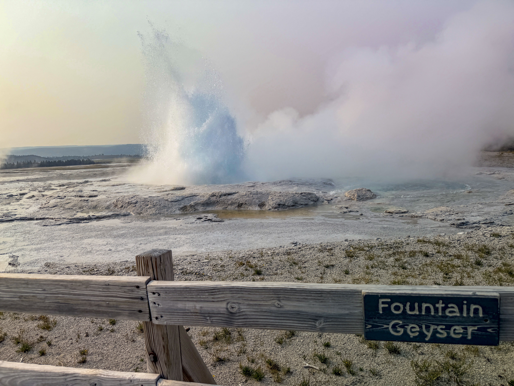
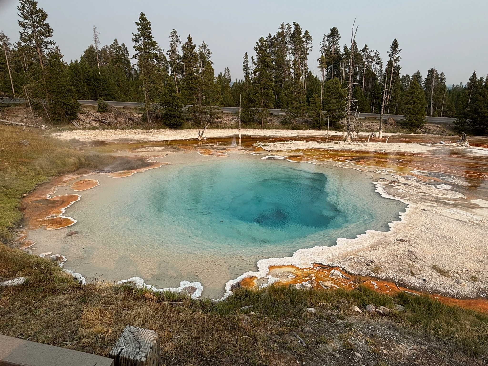
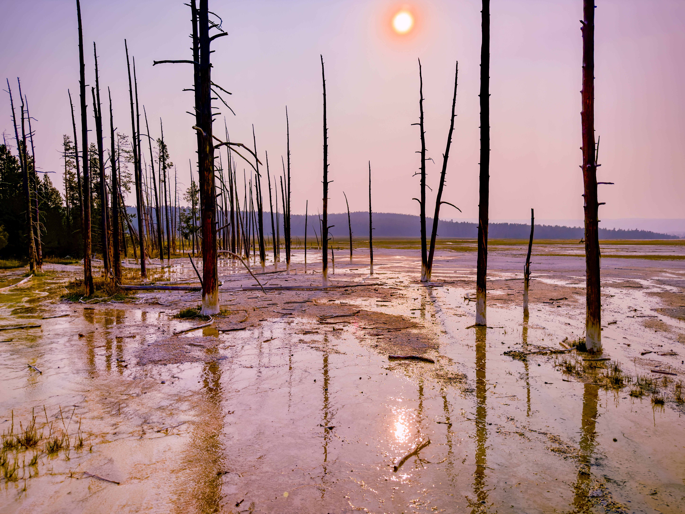
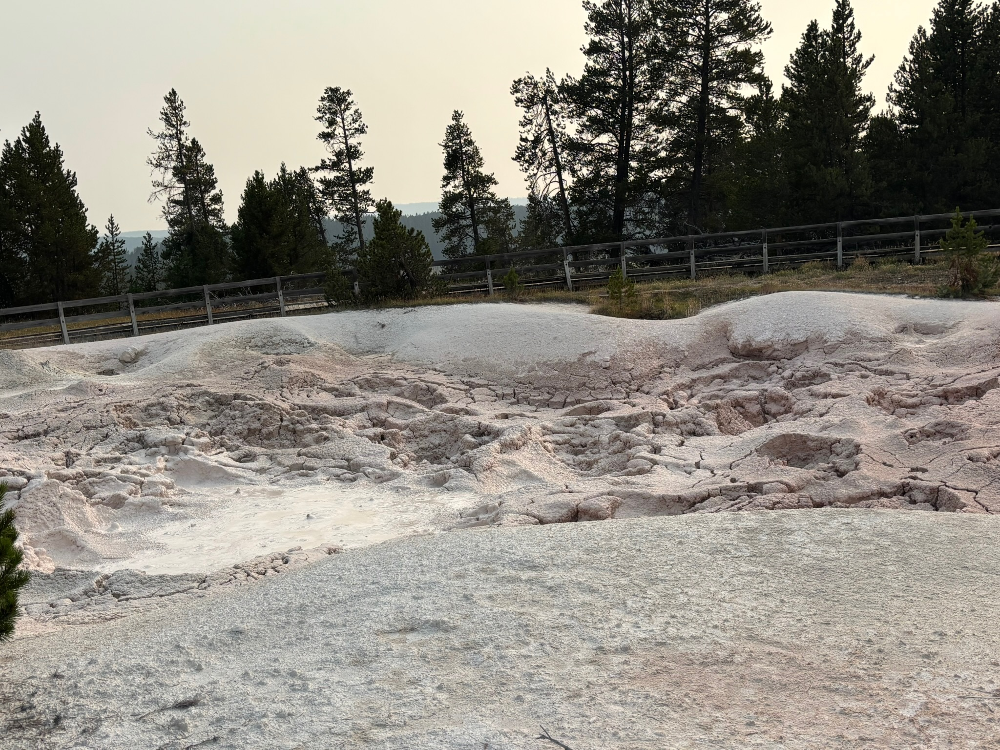
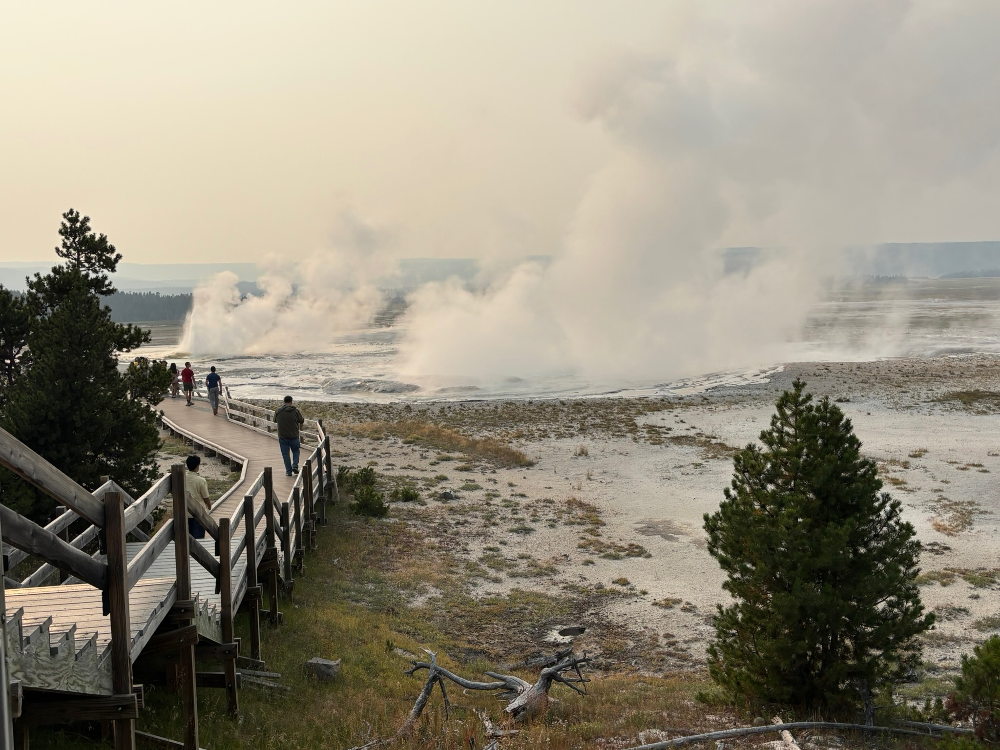
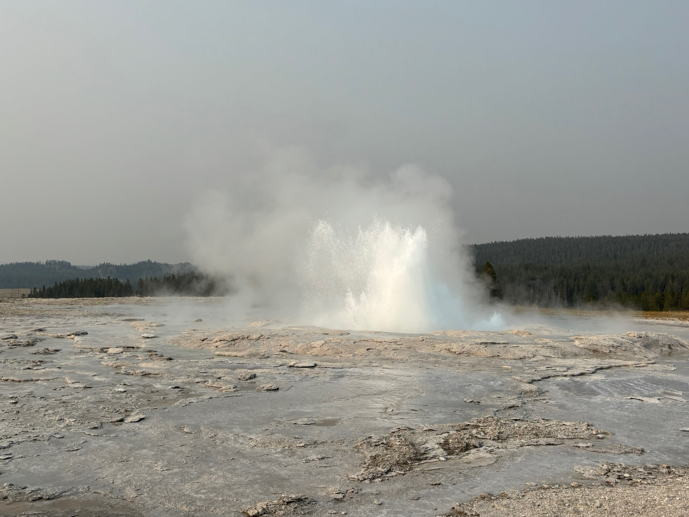

About the Fountain Paint Pots
Day 4 of the Yellowstone trip
The very last destination we went to, the Fountain Paint Pots are a part of the Lower Geyser Basin, featuring an 0.5 mile long walkway with all four major types of volcanic feaatures: fumaroles, mudpots, geysers, and springs.
Gallery:
 This is Fountain Geyser. Though not as popular as the other geysers, it makes up for that by resembling an ocean wave as it erupts, and doing so for up to half an hour. When we arrived, we saw it erupting, and it hadn't stopped when we left. |
 Though not very interesting-looking at first, Silex Spring's intrigue lies in what it does, not how it looks. It's overflowing for most of the year, its runoff painting the silica-bleached land with various colorful microorganisms. |
 Here's just some of the runoff from Silex Spring, edited in post to draw out more of a "wasteland" feel. Though it's a bit exaggerated here, the spring really does just have THAT MUCH runoff. The trees here died either from the runoff or its temperature. |
 A bubbling, near boiling mudpot, created by sulfuric acid made by microorganisms nearby, dissolving the surrounding rock. Mudpots often change with the season, and due to summertime it looked like this. Due to hydrogen sulfide, these often smell awful. |
 The fountain geyser and surrounding thermal fields from a small distance, showing the scale thanks to the people in the midground. Some of the geysers here erupt regularly if not constantly, and the water they erupt is visible here. |
 Fountain Geyser from a bit closer. This image allows closer detail of the sterilized and crystalized ground near the geysers, formed over years to centuries of eruptions. The temperature of the water can range from safe to touch to this altitude's boiling point. |